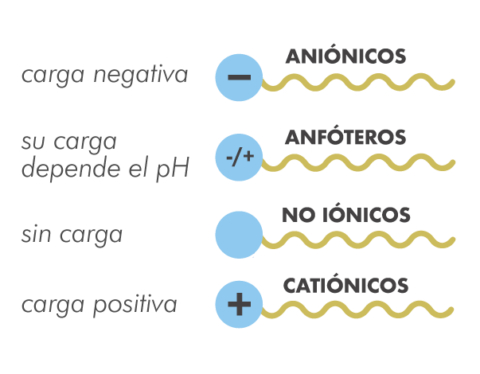

Existen distintos tipos de tensioactivos atendiendo a dos criterios diferentes:
- Según su carácter iónico cuando se añaden al agua.
- Según su HLB - Hydrophilic-Lipophilic Balance
A. Existen cuatro tipos:
- Tensioactivos aniónicos: son los que tienen la parte hidrófila con carga negativa. Son, principalmente, detergentes, humectantes y espumantes.
Ejemplos: laurilsulfato sódico y sales de ácidos grasos (jabones). -
Tensioactivos catiónicos: son los que tienen la parte hidrófila con carga positiva. Se utilizan, principalmente, como acondicionadores (se fijan a la queratina). Ejemplo: cloruro de estearil-amonio.
-
Tensioactivos anfóteros: son compuestos que tienen cargas positivas y negativas en función del pH del medio. Son catiónicos en medio ácido y aniónicos en medio básico.
Ejemplo: derivados de la betaína. -
Tensioactivos no iónicos: son no ionizables y, por tanto, no presentan carga eléctrica.
Ejemplo: óxido de etileno.
B. El HLB - Hydrophilic-Lipophilic Balance
Es un número (de 0 a 20) que indica la capacidad de los tensioactivos para disolverse en mayor o menor proporción en agua o en grasa.
Un valor de HLB bajo representa una gran afinidad por la grasa y una débil hidrofilia. Es decir, se disuelve mejor en grasa que en agua.
Un valor de HLB elevado representa una gran afinidad por el agua y una débil lipofilia. Es decir, se disuelve mejor en agua que en grasa.
Entonces:
- Valores de 0-8 indican mayor afinidad por la grasa. El tensioactivo se une mejor a sustancias lipófilas o lipofílicas.
- Valores de 8-12 indican afinidad similar por agua y grasa. El tensioactivo se une por igual a sustancias lipófilas o lipofílicas que a sustancias hidrófilas o hidrofílicas.
- Valores de 12-20 indican mayor afinidad por el agua. El tensioactivo se une mejor a sustancias hidrófilas o hidrofílicas que a sustancias lipófilas o lipofílicas.